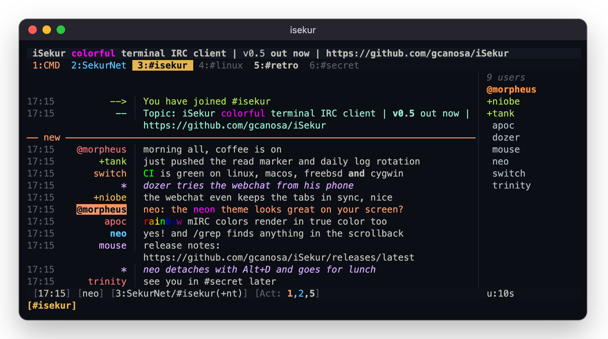
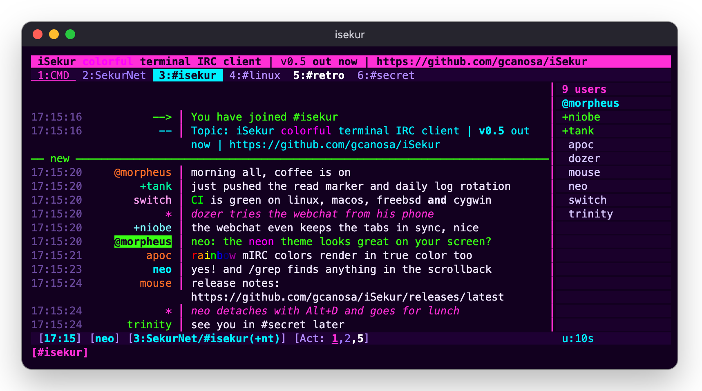
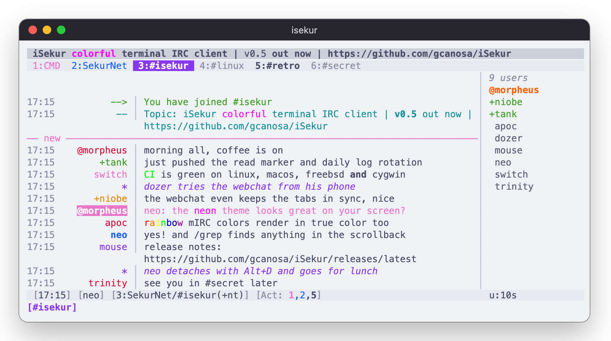
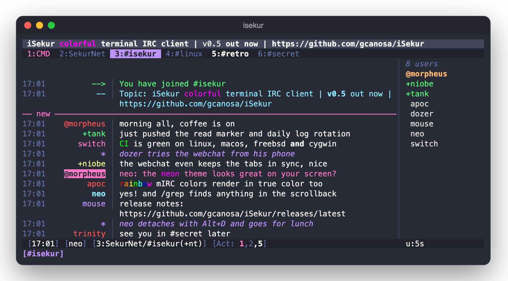
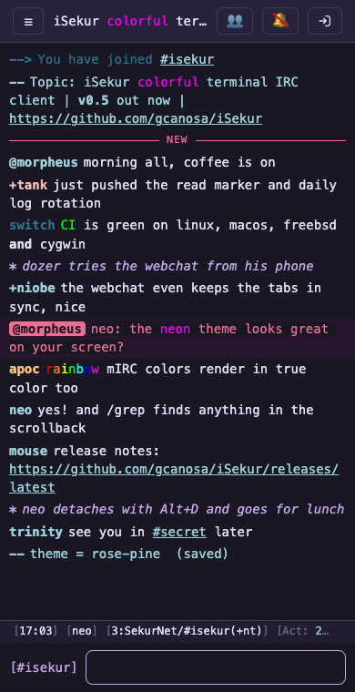
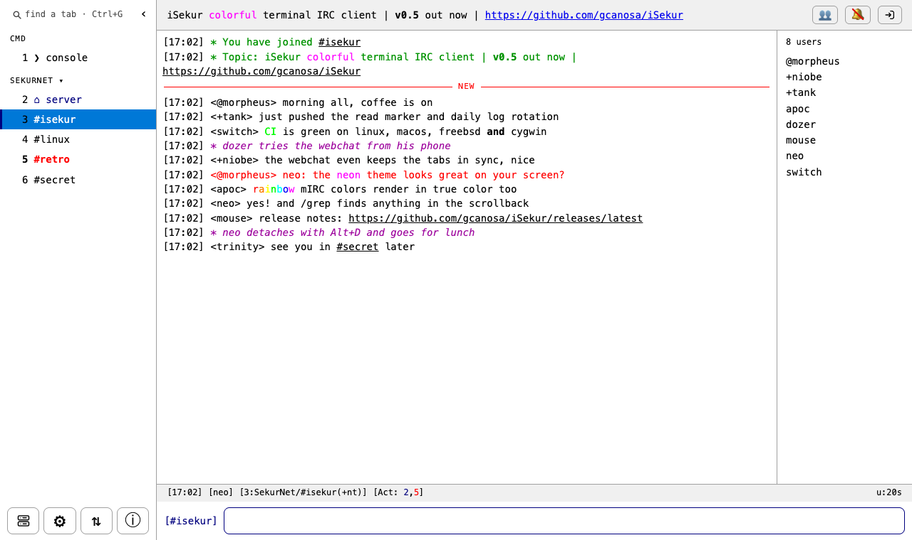

Everything you want from IRC.
Nothing you have to fight.
One small binary, OpenSSL and a config file it writes for you. A first-steps guide opens on the first start.
Truly colorful
24-bit color themes, dark and light, from neon and dracula to the classic mIRC look, with a 256-color fallback. /theme opens a live picker.
Detach & attach like tmux
Leave it running, come back from any terminal or SSH login with isekur --attach. A dropped connection detaches instead of quitting.
Modern IRC
TLS with verification, CAP 302, SASL PLAIN / SCRAM-SHA-256 / EXTERNAL, server-time, echo-message, chathistory catch-up and more.
Your session in a browser
HTTPS + WebSocket mirror of the live client. Installs as an app, with notifications for highlights and private messages.
Encrypted queries & channels
AES-256-GCM between iSekur users, with a key from scrypt. A lock on every encrypted line and tab.
A real terminal in a tab
vim, top and ssh run in a tab, behind a PAM login. /attach host brings another machine's iSekur in live.
Click everything
Tabs, activity numbers, nicks, links (OSC 8), right-click menus, wheel scrolling, drag to copy through OSC 52.
Channel op tools
/lockdown, /kickban, /tempban, mass op/voice/kick, /chanstats, /topicrotate, and a *snotices tab for opers.
The small things
Flood-safe pastes, /grep through the scrollback, a "new" marker, highlights, DCC with resume, Twitch chat, logs, a CPU/battery status bar.
Same chat, six of the 35 themes.
Screenshots of iSekur running in a terminal. A theme changes everything: the bars, the tabs, the nicklist, the timestamps, the nick colors, even the layout (mIRC puts <nicks> inline).






Windows for everything, inside the terminal.
No config file spelunking: every setting and every theme is a keystroke away.


Close the laptop.
Stay in the channel.
The IRC side lives in a background process and your terminal is only attached to it. Run several side by side, one config each.
$ isekur # start, or attach if it's running Alt+D / /detach # back to the shell, still connected $ isekur --attach # from this or any other terminal $ isekur --daemon # headless; attach later $ isekur --list # what's running, and how to attach /attach host # another machine's iSekur, in a tab
The same session, on your phone.
Not a separate client: the browser mirrors the live terminal session, the way a bouncer would. /web start and log in.


Same everything
The same tabs, nick and tab menus, input line, suggestions, status bar and theme colors as the terminal.
Installs as an app
Put it on the home screen or the dock, with notifications for highlights and private messages.
Locked down
HTTPS + WebSocket, a PBKDF2 password hash and a lockout after failed tries.
Settings in place
⚙ edits every setting with switches and a theme list, + adds a server, ⇅ downloads DCC files, seedbox style.


Private by default.
/e2e nickor/e2e #chan: AES-256-GCM, keys kept in memory/lock on: a master password before any tab, log or message/shellchecks your login through PAM and is never reachable from the web or IRC- TLS certificate verification and SASL out of the box

Up and running in a minute.
macOS and Linux, plus FreeBSD and Cygwin from source.
$ brew install gcanosa/isekur/isekur $ isekur # start it $ man isekur # the manual $ brew upgrade isekur # update to the latest release
$ curl -L https://github.com/gcanosa/iSekur/releases/latest/download/isekur-macos-arm64.tar.gz | tar xz $ sudo isekur-macos-arm64/install.sh # /usr/local
# needs a C++17 compiler, GNU make, OpenSSL 1.1+/LibreSSL and PAM $ git clone https://github.com/gcanosa/iSekur && cd iSekur $ make # gmake on *BSD $ make test $ sudo make install # /usr/local
Fast under your fingers.
Rebind any of them in the [keys] section of the config.
#iSekur on irc.sekurnet.org
Questions, bugs and ideas, on iSekur's sponsored network. Or open a GitHub issue.